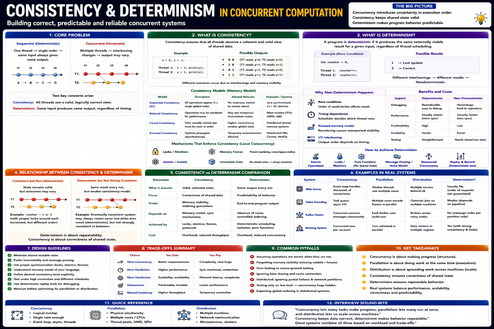

Staff Engineer Reference — Memory Models, Correctness, Repeatability & Production Design
Concurrency introduces uncertainty because multiple threads execute independently and their operations may interleave differently on every run. A correct concurrent system must ensure:
Every thread observes a valid and coherent view of shared data — memory never enters an invalid state
Same input produces the same logical result regardless of thread scheduling or execution timing
| Property | Consistency | Determinism |
|---|---|---|
| Focus | Shared state | Program behaviour |
| Guarantees | Valid memory state at all times | Repeatable, predictable results |
| Depends on | Visibility + ordering | Race-free execution |
| Achieved by | Locks, atomics, memory model | Ordering, idempotency, isolation |
| Can exist alone? | Yes | Yes |
Consistency means every thread observes a valid and coherent view of shared data, even while multiple threads access or modify it. It preserves invariants — no thread sees partial writes or invalid intermediate state.
Memory Consistency Models
| Model | Description | Performance | Typical Usage |
|---|---|---|---|
| Sequential Consistency | One global execution order — all threads agree on total order of all ops | Lowest | Critical correctness; Java volatile default |
| Acquire-Release | Partial ordering — release synchronizes-with paired acquire | Medium | Lock-free algorithms, producer-consumer |
| Relaxed | Maximum reordering allowed — atomicity only | Highest | Statistics, independent counters |
| Eventual Consistency | Replicas converge over time — temporary divergence allowed | Highest | Distributed systems (Cassandra, DynamoDB) |
Mechanisms That Provide Consistency
| Mechanism | Purpose | Cost |
|---|---|---|
| Mutex / Lock | Mutual exclusion — only one thread in critical section | High (kernel) |
| RW Lock | Shared reads, exclusive writes | Medium |
| Atomic Variables | Lock-free single-variable updates | Low |
| Volatile | Visibility guarantee — latest value always visible | Low |
| Memory Fence | Prevent CPU/compiler reordering | Low–Medium |
| Immutable Objects | Eliminate shared mutation — no synchronization needed | Lowest |
| MVCC | Snapshot isolation — readers don't block writers | Medium |
Determinism means: same input → same logical output regardless of thread scheduling or execution timing. The execution order may differ, but the observable result must remain identical.
Why Programs Become Non-Deterministic
Determinism Techniques
| Technique | Benefit | Example |
|---|---|---|
| Atomic Operations | Predictable single-variable updates | AtomicInteger.incrementAndGet() |
| Locks | Ordered access to critical sections | Synchronized balance update |
| Message Passing | No shared state — no races | Go channels, Kafka events |
| Immutable Data | No races — data never changes | Java records, Scala case classes |
| Idempotency | Safe retries — same result each call | Payment idempotency key |
| Event Ordering | Repeatable processing of ordered streams | Kafka partition ordering |
| Snapshot Isolation | Stable reads during concurrent writes | MVCC in PostgreSQL |
| System | Consistency Concern | Determinism Concern |
|---|---|---|
| API Gateway | Shared rate-limit counters, cache updates | Idempotent request retries |
| Payment System | Account balance must be correct | Same payment never charged twice |
| Kafka Consumer | Offset commit consistency | Exactly-once processing |
| Chat System | User session state | Message ordering preserved |
| Search Engine | Index update consistency | Same query → stable ranking |
| Distributed Cache | Cache coherence across nodes | Deterministic invalidation |
| Recommendation Engine | Feature store consistency | Stable ranking for same input |
Strong Consistency vs Relaxed
| Strong | Relaxed |
|---|---|
| Easier reasoning | Higher throughput |
| Correct invariants | Better scalability |
| More synchronization | Lower latency |
| Lower concurrency | Higher parallelism |
Deterministic vs Non-Deterministic
| Deterministic | Non-Deterministic |
|---|---|
| Easier debugging | Faster execution |
| Repeatable tests | Better scalability |
| Safe retries | More complex debugging |
| More synchronization | Less coordination |
Cause: Two threads read same value, both compute new value, last write wins — first write is lost. Fix: Atomic CAS (compareAndSet) or database-level optimistic locking with version check.
Cause: Retry without idempotency — network timeout causes client to retry, payment charged twice. Fix: Idempotency key (UUID per request stored server-side); second call with same key returns first result.
Cause: Parallel processing consumers on same topic without partition key — messages arrive out of order. Fix: Partition by entity key (user ID, order ID) → single consumer per partition → ordered delivery guaranteed.
Cause: Cache not invalidated after DB write — readers see old data. Fix: Write-through cache (update cache + DB atomically), versioned cache keys, or cache-aside with TTL.
About Consistency
About Determinism
Sequential Consistency vs Acquire-Release — Code
Idempotency — Determinism in Distributed Systems
Kafka — Ordered Deterministic Event Processing
MVCC — Snapshot Isolation for Consistent Reads
